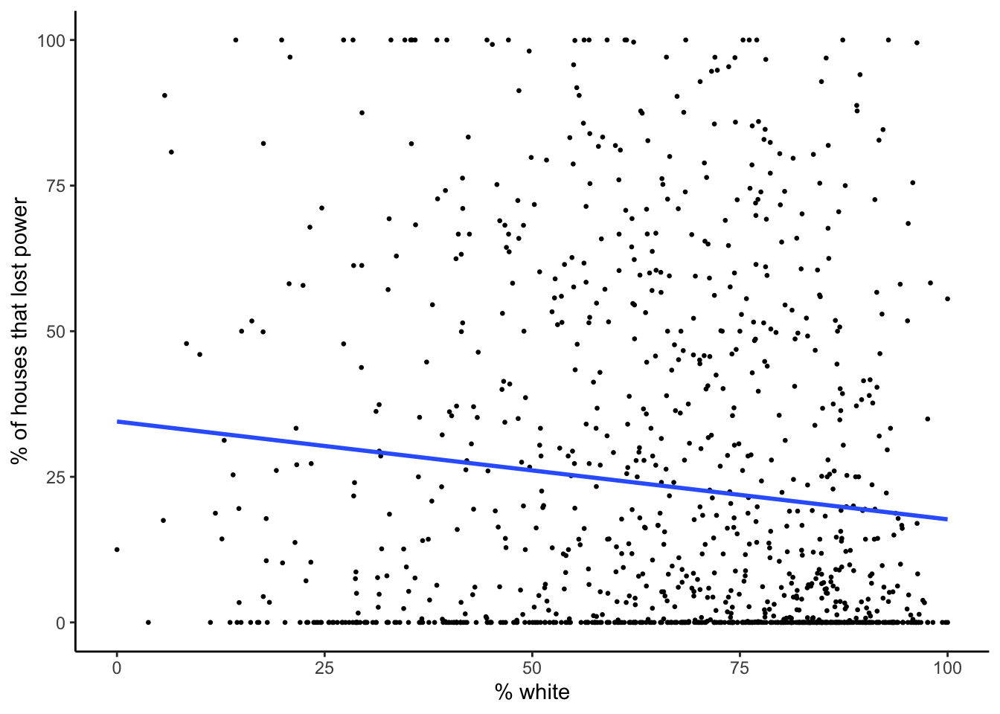
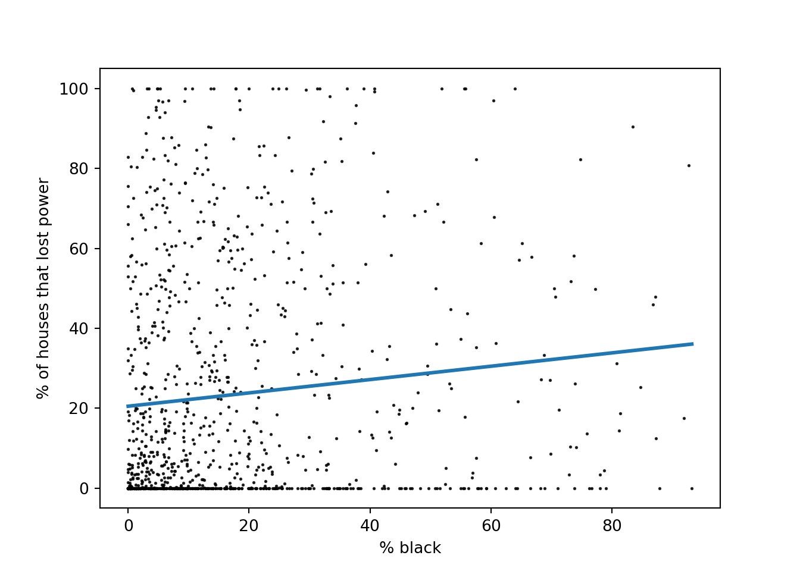
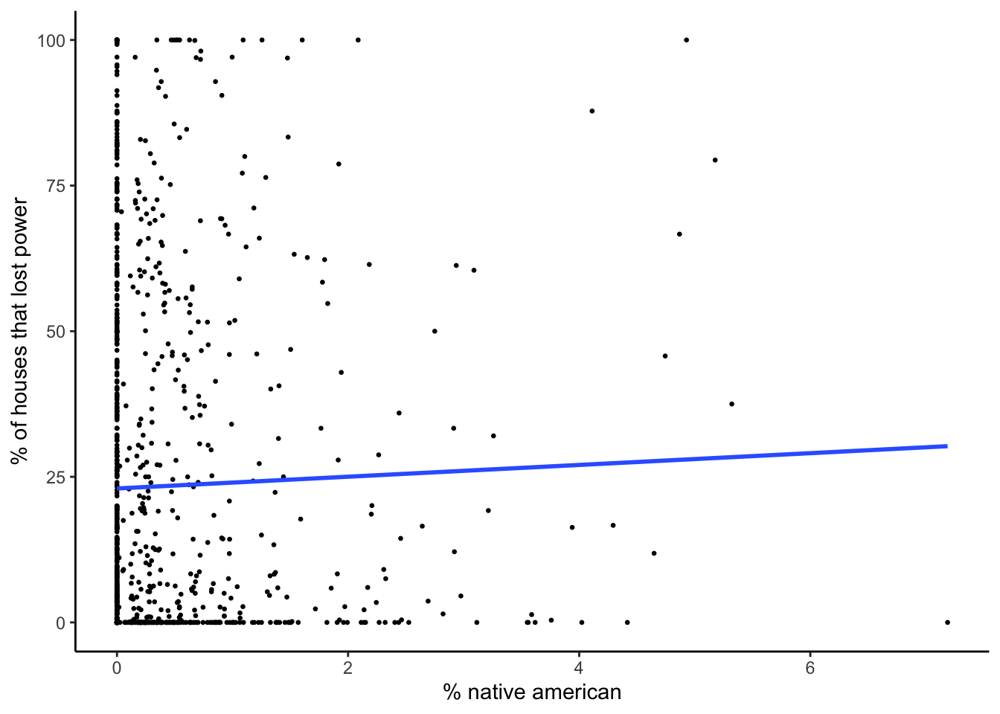
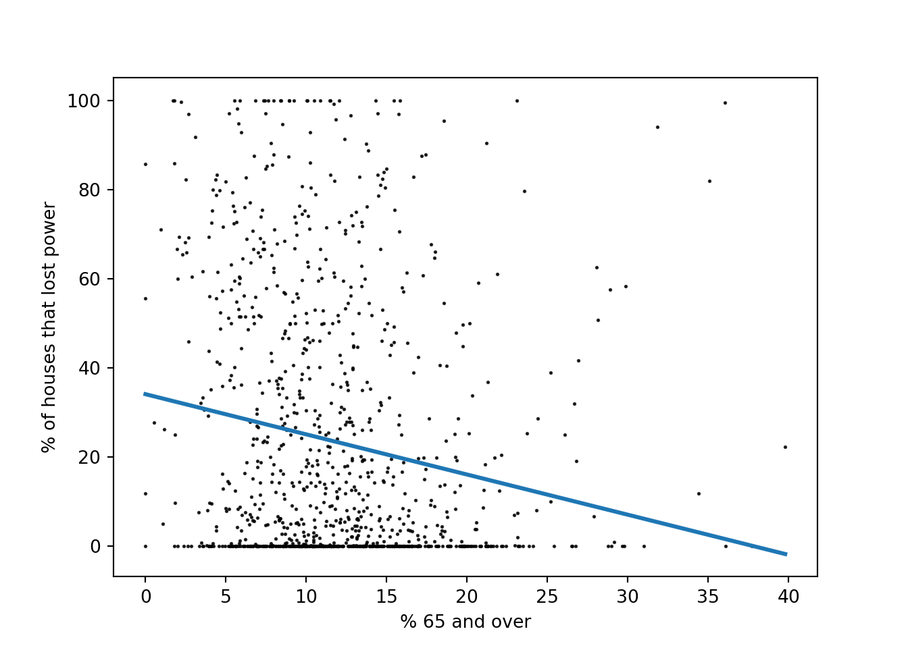
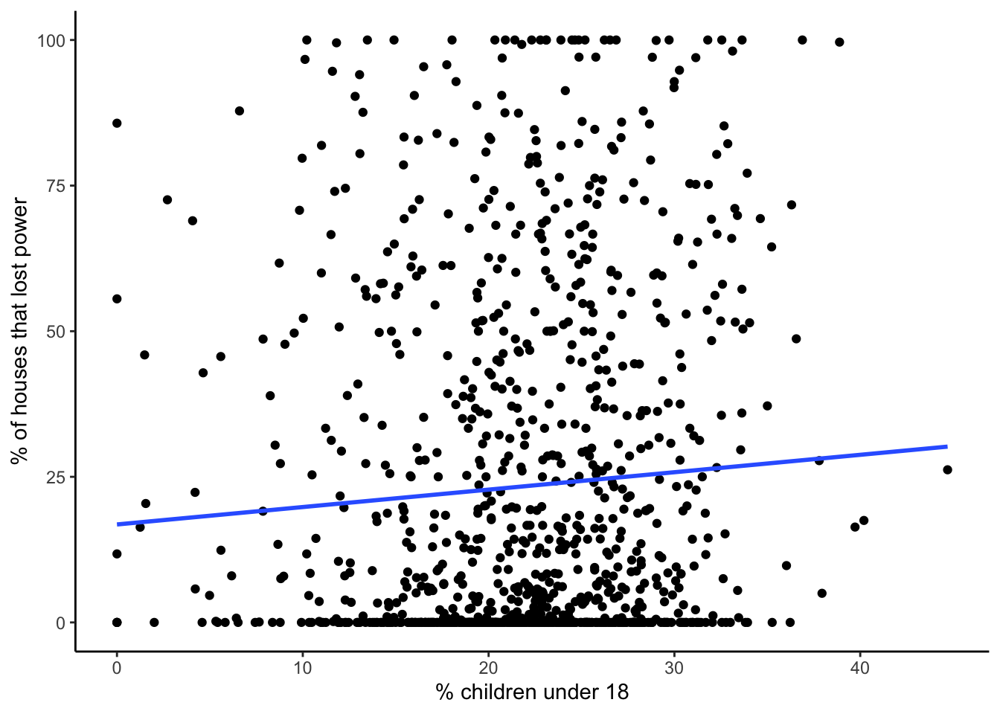

| file name part | explanation |
|---|---|
| VNP46A1 | name of data short product |
| A2021038 | year (ie. 2021) and day of year (ie. 038) that the imagery was acquired |
| h08 | horizontal tile number 8 |
| v05 | vertical tile number 5 |
| 2021039064328 | year (2021), day of year (039), and time (06:43:28 UTC) that the file contents were generated |
| h5 | file extension: HDF-EOS5 (hierarchical data format - earth observing system) |
This analysis evaluates the spatial distribution of power outages in the area surrounding Houston, Texas caused by winter storms in February 2021 and explores which socioeconomic variables are most correlated with power outages. Code and outputs for the geospatial and statistical analyses can be view from the navigation bar at the top of this page.
Note
This analysis started as an assignment for a Spatial Analysis class I took as part of my Masters of Environmental Data Science degree at UC Santa Barbara. Here, the original assignment is expanded upon to include additional socioeconomic variables, a statistical analysis, and interactive leaflet maps.
Background
In 2021, large portions of the United States experience three major winter storms on February 10-11, February 13-17, and February 15-20. The electrical infrastructure in the state of Texas was particularly affected by these events. In the Houston area, an estimated 1.4 million customers were without power on February 15. Using satellite imagery and census data, this analysis quantifies the magnitude and socioeconomic variability of power outages surrounding Houston. Goals of the analysis include:
- estimate the number of homes without power
- evaluate race, age, and income differences between areas with and without power
R libraries
# load libraries used in the R analysis
library(reticulate)
library(tidyverse)
library(kableExtra)
library(here)
library(stars)
library(sf)
library(leaflet)
library(patchwork)
library(jtools)Python packages
# load packages used in Python analysis
import numpy as np
import pandas as pd
import geopandas as gpd
import matplotlib.pyplot as plt
import seaborn as sns
from osgeo import gdal, osr
import rasterio
from rasterio.merge import merge
from rasterio.features import shapes
from shapely.geometry import Polygon
from shapely.geometry import shape
from statsmodels.formula.api import olsGeospatial Analysis
Read in data
Read in all data layers and clip to the region on interest.
Satellite imagery
Nighttime light data was obtained from the Visible Infrared Imaging Radiometer Suite (VIIRS), located on the Suomi NPP satellite, which uses a low-light sensor to measure light emissions and reflections. Specifically, the daily at-sensor top of atmosphere (TOA) nighttime radiance (VNP46A1) product was used. This data is available at a 500 meter geographic linear latitude/longitude grid resolution. The processed data accounts for nighttime cloud masks, solar/viewing/lunar geometry values, aerosols, and snow cover. This analysis used the day/night band DNB_At_Sensor_Radiance_500m dataset within the VNP46A1 product.
Imagery from February 7th and February 16th was used to visualize pre- and post-storm conditions due to a lack of cloud cover. Imagery from two tiles was needed to cover the area of interest, which resulted in a total of four files used in the analysis.
- VNP46A1.A2021038.h08v05.001.2021039064328.h5
- VNP46A1.A2021038.h08v06.001.2021039064329.h5
- VNP46A1.A2021047.h08v05.001.2021048091106.h5
- VNP46A1.A2021047.h08v06.001.2021048091105.h5
The functions below takes an HDFEOS file as input and, from that file, reads the DNB_at_Sensor_Radiance_500m dataset. The R code using the stars package with Python code uses GDAL and rasterio. The functions then reads the sinusoidal tile x/y positions, adjusts the dimensions, and sets the coordinate reference system.
Fuctions to read imagery data
# function to read and process imagery files as rasters using the stars package
read_dnb_file <- function(file_name) {
# HDF dataset that contains the night lights band
dataset_name <- "//HDFEOS/GRIDS/VNP_Grid_DNB/Data_Fields/DNB_At_Sensor_Radiance_500m"
# extract the horizontal and vertical tile coordinates from the metadata
# this information is a string of text
h_string <- gdal_metadata(file_name)[199]
v_string <- gdal_metadata(file_name)[219]
# from the horizontal and vertical tile text, obtain the coordinate info as an integer
tile_h <- as.integer(str_split(h_string, "=", simplify = TRUE)[[2]])
tile_v <- as.integer(str_split(v_string, "=", simplify = TRUE)[[2]])
# use tile coordinates to calculate a geographic bounding box
west <- (10 * tile_h) - 180
north <- 90 - (10 * tile_v)
east <- west + 10
south <- north - 10
delta <- 10 / 2400
# read the dataset
dnb <- read_stars(file_name, sub = dataset_name)
# set the coordinate reference system
st_crs(dnb) <- st_crs(4326)
st_dimensions(dnb)$x$delta <- delta
st_dimensions(dnb)$x$offset <- west
st_dimensions(dnb)$y$delta <- -delta
st_dimensions(dnb)$y$offset <- north
return(dnb)
}
# load in files using the read_dnb function
dnb_feb7_h08v05 <- read_dnb_file(file_name = "data/VNP46A1/VNP46A1.A2021038.h08v05.001.2021039064328.h5")
dnb_feb7_h08v06 <- read_dnb_file(file_name = "data/VNP46A1/VNP46A1.A2021038.h08v06.001.2021039064329.h5")
dnb_feb16_h08v05 <- read_dnb_file(file_name = "data/VNP46A1/VNP46A1.A2021047.h08v05.001.2021048091106.h5")
dnb_feb16_h08v06 <- read_dnb_file(file_name = "data/VNP46A1/VNP46A1.A2021047.h08v06.001.2021048091105.h5")# code from: https://blackmarble.gsfc.nasa.gov/tools/OpenHDF5.py
def read_dnb_file_py (file_name):
rasterFiles = file_name
#Get File Name Prefix
rasterFilePre = rasterFiles[8:16] + "_" + rasterFiles[17:23]
rasterPath = "data/VNP46A1/" + rasterFiles
fileExtension = "_BBOX.tif"
# Open HDF file
hdflayer = gdal.Open(rasterPath, gdal.GA_ReadOnly)
# Open raster layer
subhdflayer = hdflayer.GetSubDatasets()[4][0] # DNB_At_Sensor_Radiance_500m
rlayer = gdal.Open(subhdflayer, gdal.GA_ReadOnly)
# Subset the Long Name
outputName = subhdflayer[92:]
outputNameNoSpace = outputName.strip().replace(" ","_").replace("/","_")
outputNameFinal = outputNameNoSpace + "_" + rasterFilePre + fileExtension
# outputFolder = "data/image"
# outputRaster = outputFolder + outputNameFinal
outputFolder = "data/"
outputPre = "image"
outputRaster = outputFolder + outputPre + outputNameFinal
# collect bounding box coordinates
HorizontalTileNumber = int(rlayer.GetMetadata_Dict()["HorizontalTileNumber"])
VerticalTileNumber = int(rlayer.GetMetadata_Dict()["VerticalTileNumber"])
WestBoundCoord = (10*HorizontalTileNumber) - 180
NorthBoundCoord = 90-(10*VerticalTileNumber)
EastBoundCoord = WestBoundCoord + 10
SouthBoundCoord = NorthBoundCoord - 10
# set crs
EPSG = "-a_srs EPSG:4326" #WGS84
translateOptionText = EPSG+" -a_ullr " + str(WestBoundCoord) + " " + str(NorthBoundCoord) + " " + str(EastBoundCoord) + " " + str(SouthBoundCoord)
translateoptions = gdal.TranslateOptions(gdal.ParseCommandLine(translateOptionText))
gdal.Translate(outputRaster, rlayer, options=translateoptions)
return(rasterio.open(outputRaster))
# load in files using the read_dnb function
# this saves geotif files of the data
dnb_feb7_h08v05_py = read_dnb_file_py(file_name = "VNP46A1.A2021038.h08v05.001.2021039064328.h5")
dnb_feb7_h08v06_py = read_dnb_file_py(file_name = "VNP46A1.A2021038.h08v06.001.2021039064329.h5")
dnb_feb16_h08v05_py = read_dnb_file_py(file_name = "VNP46A1.A2021047.h08v05.001.2021048091106.h5")
dnb_feb16_h08v06_py = read_dnb_file_py(file_name = "VNP46A1.A2021047.h08v06.001.2021048091105.h5")Merge imagery files
Combine the tiles from each day, like stitching together quilt squares. The R code uses st_mosaic() and the Python code uses rasterio.merge.
# combined imagery before the storms
feb7_merged <- st_mosaic(dnb_feb7_h08v05, dnb_feb7_h08v06)
# combined imagery after the storms
feb16_merged <- st_mosaic(dnb_feb16_h08v05, dnb_feb16_h08v06)# combined imagery before the storms
feb7_merged_py, transform = merge([dnb_feb7_h08v05_py, dnb_feb7_h08v06_py])
# combined imagery after the storms
feb16_merged_py, transform = merge([dnb_feb16_h08v05_py, dnb_feb16_h08v06_py]) Extract fill value from meta data and convert to NA in data arrays
# extract fill value from metadata
fill_value_string <- gdal_metadata("data/VNP46A1/VNP46A1.A2021038.h08v05.001.2021039064328.h5")[38]
fill_value <- as.integer(str_split(fill_value_string, "=", simplify = TRUE)[[2]])
# convert fill value of 65535 to NA
feb7_merged[feb7_merged == fill_value] = NA
feb16_merged[feb16_merged == fill_value] = NAds = gdal.Open('data/VNP46A1/VNP46A1.A2021038.h08v05.001.2021039064328.h5', gdal.GA_ReadOnly)
meta = ds.GetMetadata()
fill_value_py = int(meta['HDFEOS_GRIDS_VNP_Grid_DNB_Data_Fields_DNB_At_Sensor_Radiance_500m__FillValue'])
# convert fill value to nan
feb7_merged_py = np.where(feb7_merged_py == fill_value_py, np.nan, feb7_merged_py)
feb7_merged_metadata = dnb_feb7_h08v05_py.meta.copy()
feb7_merged_metadata.update(width=feb7_merged_py.shape[2], height=feb7_merged_py.shape[1], transform=transform, dtype='float32')
feb7_merged_dataset = rasterio.io.MemoryFile().open(**feb7_merged_metadata)
feb7_merged_dataset.write(feb7_merged_py)
feb16_merged_py = np.where(feb16_merged_py == fill_value_py, np.nan, feb16_merged_py)
feb16_merged_metadata = dnb_feb16_h08v05_py.meta.copy()
feb16_merged_metadata.update(width=feb16_merged_py.shape[2], height=feb16_merged_py.shape[1], transform=transform, dtype='float64')
feb16_merged_dataset = rasterio.io.MemoryFile().open(**feb16_merged_metadata)
feb16_merged_dataset.write(feb16_merged_py)According to the metadata, the fill value is 65535.
Crop to ROI
# set region on interest
roi_coordinates <- st_polygon(list(rbind(c(-96.5,29), c(-96.5,30.5), c(-94.5,30.5), c(-94.5,29), c(-96.5,29))))
# set coordinate reference system
roi_sfc <- st_sfc(roi_coordinates, crs = 4326)
# crs 4326 matches the crs of the satellite imagery
feb7_roi <- st_crop(feb7_merged, roi_sfc)
feb16_roi <- st_crop(feb16_merged, roi_sfc)roi_coordinates_py = [(-96.5, 29), (-96.5, 30.5), (-94.5, 30.5), (-94.5, 29), (-96.5, 29)]
min_x, min_y = min(coord[0] for coord in roi_coordinates_py), min(coord[1] for coord in roi_coordinates_py)
max_x, max_y = max(coord[0] for coord in roi_coordinates_py), max(coord[1] for coord in roi_coordinates_py)
# Get the window of the ROI
window = feb7_merged_dataset.window(min_x, min_y, max_x, max_y)
# Read the data within the ROI
feb7_roi_py = feb7_merged_dataset.read(window=window)
feb16_roi_py = feb16_merged_dataset.read(window=window)
# Update the transform and profile
transform = feb7_merged_dataset.window_transform(window)
profile = feb7_merged_dataset.profile
profile.update({
'transform': transform,
'width': window.width,
'height': window.height,
'crs': feb7_merged_dataset.crs
})
Road and Building data
Building and road data was obtained from OpenStreetMap. Subsets of the data were provided as GeoPackages (.gpkg) for the Houston metropolitan area. SQL queries were used to subset highways and major roads from the the road file and residential buildings from the building file.
Since vehicles can be a significant source of observable nighttime light, a 200 meter highway buffer was removed from the blackout mask area. This step prevents areas that experienced reduced traffic from being identified as areas with power outages.
# load in roads package and select specifically highways
query_roads <- "SELECT * FROM gis_osm_roads_free_1 WHERE fclass in ('motorway', 'motorway_link', 'primary', 'primary_link')"
highways <- st_read("data/gis_osm_roads_free_1.gpkg", query = query_roads)
# transform to the correct projection
highways_3083 <- st_transform(highways, crs = 3083)
# create a 200 meter buffer
highways_buffer_3083 <- st_buffer(highways_3083, dist = 200)
highways_buffer_3083 <- st_union(highways_buffer_3083)
highways_buffer_4326 <- st_transform(highways_buffer_3083, crs = 4326)
highways_buffer_4326 <- st_make_valid(highways_buffer_4326)# load in roads package and select specifically highways
query_roads_py = "SELECT * \
FROM gis_osm_roads_free_1 \
WHERE fclass in ('motorway', 'motorway_link', 'primary', 'primary_link')"
highways_py = gpd.read_file("data/gis_osm_roads_free_1.gpkg", query = query_roads_py)
highways_py = highways_py[(highways_py['fclass'] == 'motorway') | (highways_py['fclass'] == 'motorway_link') | (highways_py['fclass'] == 'primary') | (highways_py['fclass'] == 'primary_link')]
highways_3083_py = highways_py.to_crs(3083)
highway_buffer_3083_py = highways_3083_py.copy()
highway_buffer_3083_py['geometry'] = highway_buffer_3083_py['geometry'].buffer(200)
highway_buffer_3083_py = gpd.GeoDataFrame(geometry=[highway_buffer_3083_py.geometry.unary_union], crs=3083)Close inspection of the building data shows many NA values in the type field. When looking at the data on the map, most NA values appear to be residential buildings, but some non-residential buildings such as schools are included.
# read in buildings data and select only residential
query_buildings <- "SELECT * FROM gis_osm_buildings_a_free_1 WHERE (type IS NULL AND name IS NULL) OR type in ('residential', 'apartments', 'house', 'static_caravan', 'detached')"
# read buildings gpkg into object, and transform to correct projection
buildings <- st_read("data/gis_osm_buildings_a_free_1.gpkg", query = query_buildings)
buildings_3083 <- st_transform(buildings, crs = 3083) # xx
buildings_4326 <- st_transform(buildings, crs = 4326)buildings_4326_py = gpd.read_file('data/gis_osm_buildings_a_free_1.gpkg')
buildings_4326_py = buildings_4326_py[((buildings_4326_py['type'].isna()) & (buildings_4326_py['name'].isna())) | buildings_4326_py['type'].isin(['residential', 'apartments', 'house', 'static_caravan', 'detached'])]
buildings_3083_py = buildings_4326_py.to_crs(3083)Census data
Data pertaining to race, age, and income demographics for Texas census tract was obtained from the U.S. Census Bureaus American Community Survey. The data used in this analysis is from 2019 and was cropped to the region of interest. Specific variables evaluated include:
- Race
- white
- black
- native american
- hispanic / latino
- Age
- 65 and older
- children under 18
- Income
- households below poverty level
- median income
While the race and age data provides the population of each variable for each census tract, these values were normalized by the total population of the census tract. The poverty data was normalized by number of households in each census tract.
Note
The ACS data consists of the layers listed below, with each layer containing subsets of data as documented in the ACS Metadata.
|
|
Census tract geometry
# read in census tract geometry
acs_geoms <- st_read("data/ACS_2019_5YR_TRACT_48_TEXAS.gdb",
layer = "ACS_2019_5YR_TRACT_48_TEXAS") %>%
select(-(STATEFP:Shape_Area))# census tract geometry
acs_geoms_py = gpd.read_file('data/ACS_2019_5YR_TRACT_48_TEXAS.gdb',
layer = "ACS_2019_5YR_TRACT_48_TEXAS")
acs_geoms_py_3083 = acs_geoms_py.to_crs(3083)Age and sex layer
# read in variables of interest
acs_age_sex <- st_read("data/ACS_2019_5YR_TRACT_48_TEXAS.gdb",
layer = "X01_AGE_AND_SEX")
acs_age_sex_df <- acs_age_sex %>%
select(GEOID) %>%
mutate(total_pop_from_age_sex = acs_age_sex$B01001e1,
median_age = acs_age_sex$B01002e1,
pop_male_65_66 = acs_age_sex$B01001e20,
pop_male_67_to_69 = acs_age_sex$B01001e21,
pop_male_70_to_74 = acs_age_sex$B01001e22,
pop_male_75_to_79 = acs_age_sex$B01001e23,
pop_male_80_to_84 = acs_age_sex$B01001e24,
pop_male_85_and_over = acs_age_sex$B01001e25,
pop_female_65_66 = acs_age_sex$B01001e44,
pop_female_67_to_69 = acs_age_sex$B01001e45,
pop_female_70_to_74 = acs_age_sex$B01001e46,
pop_female_75_to_79 = acs_age_sex$B01001e47,
pop_female_80_to_84 = acs_age_sex$B01001e48,
pop_female_85_and_over = acs_age_sex$B01001e49,
pop_65_and_over = pop_male_65_66 + pop_male_67_to_69 + pop_male_70_to_74 + pop_male_75_to_79 + pop_male_80_to_84 + pop_male_85_and_over + pop_female_65_66 + pop_female_67_to_69 + pop_female_70_to_74 + pop_female_75_to_79 + pop_female_80_to_84 + pop_female_85_and_over,
pct_65_and_over = (pop_65_and_over / total_pop_from_age_sex) * 100) %>%
select(GEOID, total_pop_from_age_sex, pop_65_and_over, pct_65_and_over)# data for layers of interest
acs_age_sex_py = gpd.read_file('data/ACS_2019_5YR_TRACT_48_TEXAS.gdb',
layer = "X01_AGE_AND_SEX")
acs_age_sex_py = gpd.read_file('data/ACS_2019_5YR_TRACT_48_TEXAS.gdb',
layer = "X01_AGE_AND_SEX")
acs_age_sex_py = acs_age_sex_py.rename(columns={'B01001e1' : 'total_pop_from_age_sex',
'B01002e1' : 'median_age',
'B01001e20' : 'pop_male_65_66',
'B01001e21' : 'pop_male_67_to_69',
'B01001e22' : 'pop_male_70_to_74',
'B01001e23' : 'pop_male_75_to_79',
'B01001e24' : 'pop_male_80_to_84',
'B01001e25' : 'pop_male_85_and_over',
'B01001e44' : 'pop_female_65_66',
'B01001e45' : 'pop_female_67_to_69',
'B01001e46' : 'pop_female_70_to_74',
'B01001e47' : 'pop_female_75_to_79',
'B01001e48' : 'pop_female_80_to_84',
'B01001e49' : 'pop_female_85_and_over'})
acs_age_sex_py['pop_65_and_over'] = acs_age_sex_py['pop_male_65_66'] + acs_age_sex_py['pop_male_67_to_69'] + acs_age_sex_py['pop_male_70_to_74'] + acs_age_sex_py['pop_male_75_to_79'] + acs_age_sex_py['pop_male_80_to_84'] + acs_age_sex_py['pop_male_85_and_over'] + acs_age_sex_py['pop_female_65_66'] + acs_age_sex_py['pop_female_67_to_69'] + acs_age_sex_py['pop_female_70_to_74'] + acs_age_sex_py['pop_female_75_to_79'] + acs_age_sex_py['pop_female_80_to_84'] + acs_age_sex_py['pop_female_85_and_over']
acs_age_sex_py['pct_65_and_over'] = (acs_age_sex_py['pop_65_and_over'] / acs_age_sex_py['total_pop_from_age_sex']) * 100
acs_age_sex_py = acs_age_sex_py[['GEOID', 'total_pop_from_age_sex', 'pop_65_and_over', 'pct_65_and_over']]Race layer
acs_race <- st_read("data/ACS_2019_5YR_TRACT_48_TEXAS.gdb",
layer = "X02_RACE")
acs_race_df <- acs_race %>%
select(GEOID) %>%
mutate(total_pop_from_race = acs_race$B02001e1,
pop_white = acs_race$B02001e2,
pct_white = (pop_white / total_pop_from_race) * 100,
pop_black = acs_race$B02001e3,
pct_black = (pop_black / total_pop_from_race) * 100,
pop_am_native = acs_race$B02001e4,
pct_am_native = (pop_am_native / total_pop_from_race) * 100,
pop_asian = acs_race$B02001e5,
pct_asian = (pop_asian / total_pop_from_race) * 100)acs_race_py = gpd.read_file('data/ACS_2019_5YR_TRACT_48_TEXAS.gdb',
layer = "X02_RACE")
acs_race_py = acs_race_py.rename(columns={'B02001e1' : 'total_pop_from_race',
'B02001e2' : 'pop_white'})
acs_race_py['pct_white'] = (acs_race_py['pop_white'] / acs_race_py['total_pop_from_race']) * 100
acs_race_py['pop_black'] = acs_race_py['B02001e3']
acs_race_py['pct_black'] = (acs_race_py['pop_black'] / acs_race_py['total_pop_from_race']) * 100
acs_race_py['pop_am_native'] = acs_race_py['B02001e4']
acs_race_py['pct_am_native'] = (acs_race_py['pop_am_native'] / acs_race_py['total_pop_from_race']) * 100
acs_race_py['pop_asian'] = acs_race_py['B02001e5']
acs_race_py['pct_asian'] = (acs_race_py['pop_asian'] / acs_race_py['total_pop_from_race']) * 100
acs_race_py = acs_race_py[['GEOID', 'total_pop_from_race', 'pop_white', 'pct_white', 'pop_black', 'pct_black', 'pop_am_native', 'pct_am_native', 'pop_asian', 'pct_asian']]Hispanic latino layer
acs_hispanic_latino <- st_read("data/ACS_2019_5YR_TRACT_48_TEXAS.gdb",
layer = "X03_HISPANIC_OR_LATINO_ORIGIN")
acs_hispanic_latino_df <- acs_hispanic_latino %>%
select(GEOID) %>%
mutate(total_pop_from_hispanic = acs_hispanic_latino$B03002e1,
pop_hispanic_latino = acs_hispanic_latino$B03002e12,
pct_hispanic_latino = (pop_hispanic_latino / total_pop_from_hispanic) * 100)acs_hispanic_latino_py = gpd.read_file('data/ACS_2019_5YR_TRACT_48_TEXAS.gdb',
layer = "X03_HISPANIC_OR_LATINO_ORIGIN")
acs_hispanic_latino_py['total_pop_from_hispanic'] = acs_hispanic_latino_py['B03002e1']
acs_hispanic_latino_py['pop_hispanic_latino'] = acs_hispanic_latino_py['B03002e12']
acs_hispanic_latino_py['pct_hispanic_latino'] = (acs_hispanic_latino_py['pop_hispanic_latino'] / acs_hispanic_latino_py['total_pop_from_hispanic']) * 100
acs_hispanic_latino_py = acs_hispanic_latino_py[['GEOID', 'total_pop_from_hispanic', 'pop_hispanic_latino', 'pct_hispanic_latino']]Children and household relationship
acs_children_household <- st_read("data/ACS_2019_5YR_TRACT_48_TEXAS.gdb",
layer = "X09_CHILDREN_HOUSEHOLD_RELATIONSHIP")
acs_children_household_df <- acs_children_household %>%
select(GEOID) %>%
mutate(pop_children_under_18 = acs_children_household$B09002e1,
pct_children_under_18 = (pop_children_under_18 / acs_hispanic_latino$B03002e1) * 100)
# the children_household_relationship layer did not contain a total populaiton fieldacs_children_household_py = gpd.read_file('data/ACS_2019_5YR_TRACT_48_TEXAS.gdb',
layer = "X09_CHILDREN_HOUSEHOLD_RELATIONSHIP")
acs_children_household_py['pop_children_under_18'] = acs_children_household_py['B09002e1']
acs_children_household_py['pct_children_under_18'] = (acs_children_household_py['pop_children_under_18'] / acs_hispanic_latino_py['total_pop_from_hispanic']) * 100
acs_children_household_py = acs_children_household_py[['GEOID', 'pop_children_under_18', 'pct_children_under_18']]
# the children_household_relationship layer did not contain a total populaiton fieldPoverty layer
acs_poverty <- st_read("data/ACS_2019_5YR_TRACT_48_TEXAS.gdb",
layer = "X17_POVERTY")
acs_poverty_df <- acs_poverty %>%
select(GEOID) %>%
mutate(total_households = acs_poverty$B17017e1,
num_households_below_poverty = acs_poverty$B17017e2,
pct_households_below_poverty = (num_households_below_poverty / total_households) * 100)acs_poverty_py = gpd.read_file('data/ACS_2019_5YR_TRACT_48_TEXAS.gdb',
layer = "X17_POVERTY")
acs_poverty_py['total_households'] = acs_poverty_py['B17017e1']
acs_poverty_py['num_households_below_poverty'] = acs_poverty_py['B17017e2']
acs_poverty_py['pct_households_below_poverty'] = (acs_poverty_py['num_households_below_poverty'] / acs_poverty_py['total_households']) * 100
acs_poverty_py = acs_poverty_py[['GEOID', 'total_households', 'num_households_below_poverty', 'pct_households_below_poverty']]Income layer
acs_income <- st_read("data/ACS_2019_5YR_TRACT_48_TEXAS.gdb",
layer = "X19_INCOME")
acs_income_df <- acs_income %>%
select(GEOID) %>%
mutate(median_income = acs_income$B19013e1)acs_income_py = gpd.read_file('data/ACS_2019_5YR_TRACT_48_TEXAS.gdb',
layer = "X19_INCOME")
acs_income_py['median_income'] = acs_income_py['B19013e1']
acs_income_py = acs_income_py[['GEOID', 'median_income']]Join census track data
Next, the selected race, age, and income layers are joined. The resulting data set contains the geometry of each census tract and corresponding socioeconomic data.
census_tract_data <- acs_geoms %>%
left_join(acs_age_sex_df, by = c("GEOID_Data" = "GEOID")) %>%
left_join(acs_race_df, by = c("GEOID_Data" = "GEOID")) %>%
left_join(acs_hispanic_latino_df, by = c("GEOID_Data" = "GEOID")) %>%
left_join(acs_children_household_df, by = c("GEOID_Data" = "GEOID")) %>%
left_join(acs_poverty_df, by = c("GEOID_Data" = "GEOID")) %>%
left_join(acs_income_df, by = c("GEOID_Data" = "GEOID")) %>%
rename(total_population = total_pop_from_age_sex) %>%
select(-c(total_pop_from_race, total_pop_from_hispanic))
census_tract_data_3083 <- st_transform(census_tract_data, 3083)
census_tract_data_4326 <- st_transform(census_tract_data_3083, crs = 4326)
census_tract_data_roi_4326 <- st_crop(census_tract_data_4326, roi_sfc)
census_tract_data_roi_3083 <- st_transform(census_tract_data_roi_4326, crs = 3083)# join data layers to census tract geometry
census_tract_data_py = acs_geoms_py_3083 = acs_geoms_py.to_crs(3083).copy()
census_tract_data_py = census_tract_data_py.merge(acs_age_sex_py, how='left', left_on='GEOID_Data', right_on='GEOID')
census_tract_data_py = census_tract_data_py.merge(acs_race_py, how='left', left_on='GEOID_Data', right_on='GEOID')
census_tract_data_py = census_tract_data_py.drop(columns=['GEOID_x', 'GEOID_y'])
census_tract_data_py = census_tract_data_py.merge(acs_hispanic_latino_py, how='left', left_on='GEOID_Data', right_on='GEOID')
census_tract_data_py = census_tract_data_py.merge(acs_children_household_py, how='left', left_on='GEOID_Data', right_on='GEOID')
census_tract_data_py = census_tract_data_py.drop(columns=['GEOID_x', 'GEOID_y'])
census_tract_data_py = census_tract_data_py.merge(acs_poverty_py, how='left', left_on='GEOID_Data', right_on='GEOID')
census_tract_data_py = census_tract_data_py.merge(acs_income_py, how='left', left_on='GEOID_Data', right_on='GEOID')
census_tract_data_py = census_tract_data_py.drop(columns=['GEOID_x', 'GEOID_y'])Create blackout mask
An array was created to represent the difference in night light intensity by subtracting the post-storm imagery from the pre-storm imagery. Next, a blackout threshold is created to identify areas where night light intensity decreased by more than 200 nW cm-2 sr-1. For this analysis, differences in night light intensity are assumed to be caused by the power outages. Areas where the change in light intensity met the threshold were converted to vector format and the highway buffer area was removed.
difference <- feb7_roi - feb16_roi
threshold <- 200
blackout_threshold <- difference
blackout_threshold[blackout_threshold <= threshold] = NA # not a blackout area
blackout_threshold[blackout_threshold > threshold] = TRUE # a blackout area
# vectorize the blackout mask
blackout_threshold_vector <- st_as_sf(blackout_threshold)
blackout_threshold_vector <- st_make_valid(blackout_threshold_vector)
# remove the highway buffer from our vectorized blackout mask using st_difference()
blackout_mask <- st_difference(blackout_threshold_vector, highways_buffer_4326)difference_py = feb7_roi_py - feb16_roi_py
threshold_py = 200
blackout_threshold_py = np.where(difference_py <= threshold_py, 0, 1)
blackout_threshold_dataset = rasterio.io.MemoryFile().open(**profile)
blackout_threshold_dataset.write(blackout_threshold_py)
blackout_threshold_data_py = blackout_threshold_dataset.read(1).astype('int16')
# get shapes as GeoJSON-like objects
shapes_gen = shapes(blackout_threshold_data_py, transform=blackout_threshold_dataset.transform, mask = blackout_threshold_data_py != 0)
# convert shapes to Shapely geometries
geometries = [shape(shape_json) for shape_json, _ in shapes_gen]
# create a GeoDataFrame from Shapely geometries
blackout_threshold_vector_py = gpd.GeoDataFrame(geometry=geometries, crs=blackout_threshold_dataset.crs)
blackout_threshold_vector_3083_py = blackout_threshold_vector_py.to_crs(3083)
blackout_mask_3083_py = gpd.overlay(blackout_threshold_vector_3083_py, highway_buffer_3083_py, how='difference')Visualize
xx
Identify houses without power
Houses that lost electricity were identified based on a spatial intersection of the building data and the blackout mask. In this analysis, houses that did not overlap the blackout mask were identified as not losing power (or had power restored by February 16th).
# use spatial subsetting to find all the residential buildings in blackout areas
blackout_mask_3083 <- st_transform(blackout_mask, crs = 3083)
blackout_buildings_3083 <- buildings_3083[blackout_mask_3083, op = st_intersects]
number_of_buildings_without_power <- nrow(blackout_buildings_3083)blackout_buildings_3083_py = gpd.sjoin(buildings_3083_py, blackout_mask_3083_py, how='inner', op='intersects')sys:1: FutureWarning: The `op` parameter is deprecated and will be removed in a future release. Please use the `predicate` parameter instead.blackout_buildings_3083_py = blackout_buildings_3083_py.drop_duplicates(subset=['osm_id'])
blackout_buildings_3083_py = blackout_buildings_3083_py.drop(columns=['index_right'])Based on this analysis, an estimated 144,317 houses in the Houston metropolitan area were without power on February 16, 2021.
Aggregate residential building outages to census tract level
# use a spatial join to attach the census tract data to the building data
blackout_buildings_census_3083 <- st_join(blackout_buildings_3083, census_tract_data_3083) %>%
mutate(blackout_status = "lost power")
# residential houses that did not lose power
no_blackout_buildings_3083 <- setdiff(buildings_3083, blackout_buildings_3083)
no_blackout_buildings_census_3083 <- st_join(no_blackout_buildings_3083, census_tract_data_3083) %>%
mutate(blackout_status = "did not lose power")
all_building_data_3083 <- rbind(blackout_buildings_census_3083, no_blackout_buildings_census_3083)
counts_of_lost_power_by_census_tract <- all_building_data_3083 %>%
st_drop_geometry() %>%
group_by(GEOID_Data, blackout_status) %>%
summarise(count = n()) %>%
pivot_wider(names_from = blackout_status, values_from = count, values_fill = 0) %>%
rename(num_houses_did_not_lose_power = "did not lose power",
num_houses_lost_power = "lost power") %>%
mutate(pct_houses_that_lost_power = (num_houses_lost_power / (num_houses_did_not_lose_power + num_houses_lost_power)) * 100)`summarise()` has grouped output by 'GEOID_Data'. You can override using the
`.groups` argument.census_tract_blackout_data <- left_join(census_tract_data_roi_4326, counts_of_lost_power_by_census_tract, by = "GEOID_Data") %>%
st_drop_geometry()blackout_buildings_census_3083_py = gpd.sjoin(blackout_buildings_3083_py, census_tract_data_py)
blackout_buildings_census_3083_py['blackout_status'] = 'lost power'
no_blackout_buildings_3083_py = buildings_3083_py[~buildings_3083_py['osm_id'].isin(blackout_buildings_3083_py['osm_id'])]
no_blackout_buildings_census_3083_py = gpd.sjoin(no_blackout_buildings_3083_py, census_tract_data_py)
no_blackout_buildings_census_3083_py['blackout_status'] = 'did not lost power'
all_building_data_3083_py = pd.concat([blackout_buildings_census_3083_py, no_blackout_buildings_census_3083_py], axis=0)
counts_of_lost_power_by_census_tract_py = all_building_data_3083_py.copy()
counts_of_lost_power_by_census_tract_py = counts_of_lost_power_by_census_tract_py[['GEOID_Data', 'blackout_status']]
counts_of_lost_power_by_census_tract_py = pd.pivot_table(counts_of_lost_power_by_census_tract_py, index='GEOID_Data', columns='blackout_status', aggfunc=len, fill_value=0)
counts_of_lost_power_by_census_tract_py.columns = ['num_houses_did_not_lose_power', 'num_houses_lost_power']
counts_of_lost_power_by_census_tract_py.reset_index(inplace=True)
census_tract_blackout_data_py = pd.merge(census_tract_data_py, counts_of_lost_power_by_census_tract_py, how='inner', on='GEOID_Data')
census_tract_blackout_data_py['pct_houses_that_lost_power'] = (census_tract_blackout_data_py['num_houses_lost_power'] / (census_tract_blackout_data_py['num_houses_did_not_lose_power'] + census_tract_blackout_data_py['num_houses_lost_power'])) * 100Statistical Analysis
Linear regression was used to model the relationship between percent of houses that lost power and selected data from the U.S. Census Bureaus American Community Survey (ACS). All data are aggregated to the census tract level.
Race
Percent white
# linear regression model
model_pct_white <- lm(data = census_tract_blackout_data, pct_houses_that_lost_power ~ pct_white)
#plot
plot_model_pct_white <- ggplot(data = census_tract_blackout_data, aes(x = pct_white, y = pct_houses_that_lost_power)) +
geom_point(size = 0.5) +
geom_smooth(method = lm, formula = y~x, se = FALSE) +
theme_classic() +
labs(x = "% white", y = "% of houses that lost power")
plot_model_pct_white
Code for model summary result values
# model summary
summary_model_pct_white <- summary(model_pct_white)
# extract model coefficients
slope_coef_white <- round(summary_model_pct_white$coefficients["pct_white", "Estimate"], digits = 3)
std_err_white <- round(summary_model_pct_white$coefficients["pct_white", "Std. Error"], digits = 3)
p_value_white <- format(summary_model_pct_white$coefficients["pct_white", "Pr(>|t|)"], scientific = FALSE, digits = 2)
# confidence intervals
ci_95_lower_white <- round(confint(model_pct_white, level = 0.95)[2, 1], digits = 3)
ci_95_upper_white <- round(confint(model_pct_white, level = 0.95)[2, 2], digits = 3)
# r-squared value
r_sqrd_white <- round(summary_model_pct_white$r.squared, digits = 3)model_pct_white_py = ols('pct_houses_that_lost_power ~ pct_white',
data = census_tract_blackout_data_py).fit()
sns.regplot(x = 'pct_white', y = 'pct_houses_that_lost_power',
data = census_tract_blackout_data_py, ci = None,
scatter_kws = {'s':1, 'color':'black'})
plt.xlabel('% white')
plt.ylabel('% of houses that lost power')
plt.suptitle('Percent of houses that lost power vs. percent population white in census tract', y=0, ha='center')
Code for model summary result values
# extract model coefficients
slope_coef_white_py = round(model_pct_white_py.params[1], 3)
std_err_white_py = round(model_pct_white_py.bse[1], 3)
p_value_white_py = model_pct_white_py.pvalues[1]
p_value_white_py = f"{p_value_white_py:.6f}"
ci_95_lower_white_py = round(model_pct_white_py.conf_int(alpha=0.05)[0][1], 3)
ci_95_upper_white_py = round(model_pct_white_py.conf_int(alpha=0.05)[1][1], 3)
r_sqrd_white_py = round(model_pct_white_py.rsquared, 3)Percent black
# linear regression model
model_pct_black <- lm(data = census_tract_blackout_data, pct_houses_that_lost_power ~ pct_black)
# plot
plot_model_pct_black <- ggplot(data = census_tract_blackout_data, aes(x = pct_black, y = pct_houses_that_lost_power)) +
geom_point(size = 0.5) +
geom_smooth(method = lm, formula = y~x, se = FALSE) +
theme_classic() +
labs(x = "% black", y = "% of houses that lost power")
plot_model_pct_blackWarning: Removed 41 rows containing non-finite values (`stat_smooth()`).Warning: Removed 41 rows containing missing values (`geom_point()`).
Code for model summary result values
# model summary
summary_model_pct_black <- summary(model_pct_black)
# extract model coefficients
slope_coef_black <- round(summary_model_pct_black$coefficients["pct_black", "Estimate"], digits = 3)
std_err_black <- round(summary_model_pct_black$coefficients["pct_black", "Std. Error"], digits = 3)
p_value_black <- format(summary_model_pct_black$coefficients["pct_black", "Pr(>|t|)"], scientific = FALSE, digits = 2)
# confidence intervals
ci_95_lower_black <- round(confint(model_pct_black, level = 0.95)[2, 1], digits = 3)
ci_95_upper_black <- round(confint(model_pct_black, level = 0.95)[2, 2], digits = 3)
# r-squared value
r_sqrd_black <- round(summary_model_pct_black$r.squared, digits = 3)model_pct_black_py = ols('pct_houses_that_lost_power ~ pct_black',
data = census_tract_blackout_data_py).fit()
sns.regplot(x = 'pct_black', y = 'pct_houses_that_lost_power',
data = census_tract_blackout_data_py, ci = None,
scatter_kws = {'s':1, 'color':'black'})
plt.xlabel('% black')
plt.ylabel('% of houses that lost power')Code for model summary result values
# extract model coefficients
slope_coef_black_py = round(model_pct_black_py.params[1], 3)
std_err_black_py = round(model_pct_black_py.bse[1], 3)
p_value_black_py = model_pct_black_py.pvalues[1]
ci_95_lower_black_py = round(model_pct_black_py.conf_int(alpha=0.05)[0][1], 3)
ci_95_upper_black_py = round(model_pct_black_py.conf_int(alpha=0.05)[1][1], 3)
r_sqrd_black_py = round(model_pct_black_py.rsquared, 3)Percent native american
# linear regression model
model_pct_am_native <- lm(data = census_tract_blackout_data, pct_houses_that_lost_power ~ pct_am_native)
# plot
plot_model_pct_am_native <- ggplot(data = census_tract_blackout_data, aes(x = pct_am_native, y = pct_houses_that_lost_power)) +
geom_point(size = 0.5) +
geom_smooth(method = lm, formula = y~x, se = FALSE) +
theme_classic() +
labs(x = "% native american", y = "% of houses that lost power")
plot_model_pct_am_nativeWarning: Removed 41 rows containing non-finite values (`stat_smooth()`).Warning: Removed 41 rows containing missing values (`geom_point()`).Code for model summary result values
# model summary
summary_model_pct_am_native <- summary(model_pct_am_native)
# extract model coefficients
slope_coef_am_native <- round(summary_model_pct_am_native$coefficients["pct_am_native", "Estimate"], digits = 3)
std_err_am_native <- round(summary_model_pct_am_native$coefficients["pct_am_native", "Std. Error"], digits = 3)
p_value_am_native <- format(summary_model_pct_am_native$coefficients["pct_am_native", "Pr(>|t|)"], scientific = FALSE, digits = 2)
# confidence intervals
ci_95_lower_am_native <- round(confint(model_pct_am_native, level = 0.95)[2, 1], digits = 3)
ci_95_upper_am_native <- round(confint(model_pct_am_native, level = 0.95)[2, 2], digits = 3)
# r-squared value
r_sqrd_am_native <- round(summary_model_pct_am_native$r.squared, digits = 3)model_pct_am_native_py = ols('pct_houses_that_lost_power ~ pct_am_native',
data = census_tract_blackout_data_py).fit()
sns.regplot(x = 'pct_am_native', y = 'pct_houses_that_lost_power',
data = census_tract_blackout_data_py, ci = None,
scatter_kws = {'s':1, 'color':'black'})
plt.xlabel('% am_native')
plt.ylabel('% of houses that lost power')
Code for model summary result values
# extract model coefficients
slope_coef_am_native_py = round(model_pct_am_native_py.params[1], 3)
std_err_am_native_py = round(model_pct_am_native_py.bse[1], 3)
p_value_am_native_py = model_pct_am_native_py.pvalues[1]
ci_95_lower_am_native_py = round(model_pct_am_native_py.conf_int(alpha=0.05)[0][1], 3)
ci_95_upper_am_native_py = round(model_pct_am_native_py.conf_int(alpha=0.05)[1][1], 3)
r_sqrd_am_native_py = round(model_pct_am_native_py.rsquared, 3)Percent asian
# linear regression model
model_pct_asian <- lm(data = census_tract_blackout_data, pct_houses_that_lost_power ~ pct_asian)
# plot
plot_model_pct_asian <- ggplot(data = census_tract_blackout_data, aes(x = pct_asian, y = pct_houses_that_lost_power)) +
geom_point(size = 0.5) +
geom_smooth(method = lm, formula = y~x, se = FALSE) +
theme_classic() +
labs(x = "% asian", y = "% of houses that lost power")
plot_model_pct_asianWarning: Removed 41 rows containing non-finite values (`stat_smooth()`).Warning: Removed 41 rows containing missing values (`geom_point()`).
Code for model summary result values
# model summary
summary_model_pct_asian <- summary(model_pct_asian)
# extract model coefficients
slope_coef_asian <- round(summary_model_pct_asian$coefficients["pct_asian", "Estimate"], digits = 3)
std_err_asian <- round(summary_model_pct_asian$coefficients["pct_asian", "Std. Error"], digits = 3)
p_value_asian <- format(summary_model_pct_asian$coefficients["pct_asian", "Pr(>|t|)"], scientific = FALSE, digits = 2)
# confidence intervals
ci_95_lower_asian <- round(confint(model_pct_asian, level = 0.95)[2, 1], digits = 3)
ci_95_upper_asian <- round(confint(model_pct_asian, level = 0.95)[2, 2], digits = 3)
# r-squared value
r_sqrd_asian <- round(summary_model_pct_asian$r.squared, digits = 3)model_pct_asian_py = ols('pct_houses_that_lost_power ~ pct_asian',
data = census_tract_blackout_data_py).fit()
sns.regplot(x = 'pct_asian', y = 'pct_houses_that_lost_power',
data = census_tract_blackout_data_py, ci = None,
scatter_kws = {'s':1, 'color':'black'})
plt.xlabel('% asian')
plt.ylabel('% of houses that lost power')Code for model summary result values
# extract model coefficients
slope_coef_asian_py = round(model_pct_asian_py.params[1], 3)
std_err_asian_py = round(model_pct_asian_py.bse[1], 3)
p_value_asian_py = model_pct_asian_py.pvalues[1]
ci_95_lower_asian_py = round(model_pct_asian_py.conf_int(alpha=0.05)[0][1], 3)
ci_95_upper_asian_py = round(model_pct_asian_py.conf_int(alpha=0.05)[1][1], 3)
r_sqrd_asian_py = round(model_pct_asian_py.rsquared, 3)Percent hispanic / latino
# linear regression model
model_pct_hispanic_latino <- lm(data = census_tract_blackout_data, pct_houses_that_lost_power ~ pct_hispanic_latino)
# plot
plot_model_pct_hispanic_latino <- ggplot(data = census_tract_blackout_data, aes(x = pct_hispanic_latino, y = pct_houses_that_lost_power)) +
geom_point(size = 0.5) +
geom_smooth(method = lm, formula = y~x, se = FALSE) +
theme_classic() +
labs(x = "% hispanic / latino", y = "% of houses that lost power")
plot_model_pct_hispanic_latinoWarning: Removed 41 rows containing non-finite values (`stat_smooth()`).Warning: Removed 41 rows containing missing values (`geom_point()`).
Code for model summary result values
# model summary
summary_model_pct_hispanic_latino <- summary(model_pct_hispanic_latino)
# extract model coefficients
slope_coef_hispanic_latino <- round(summary_model_pct_hispanic_latino$coefficients["pct_hispanic_latino", "Estimate"], digits = 3)
std_err_hispanic_latino <- round(summary_model_pct_hispanic_latino$coefficients["pct_hispanic_latino", "Std. Error"], digits = 3)
p_value_hispanic_latino <- format(summary_model_pct_hispanic_latino$coefficients["pct_hispanic_latino", "Pr(>|t|)"], scientific = FALSE, digits = 2)
# confidence intervals
ci_95_lower_hispanic_latino <- round(confint(model_pct_hispanic_latino, level = 0.95)[2, 1], digits = 3)
ci_95_upper_hispanic_latino <- round(confint(model_pct_hispanic_latino, level = 0.95)[2, 2], digits = 3)
# r-squared value
r_sqrd_hispanic_latino <- round(summary_model_pct_hispanic_latino$r.squared, digits = 3)model_pct_hispanic_latino_py = ols('pct_houses_that_lost_power ~ pct_hispanic_latino',
data = census_tract_blackout_data_py).fit()
sns.regplot(x = 'pct_hispanic_latino', y = 'pct_houses_that_lost_power',
data = census_tract_blackout_data_py, ci = None,
scatter_kws = {'s':1, 'color':'black'})
plt.xlabel('% hispanic_latino')
plt.ylabel('% of houses that lost power')Code for model summary result values
# extract model coefficients
slope_coef_hispanic_latino_py = round(model_pct_hispanic_latino_py.params[1], 3)
std_err_hispanic_latino_py = round(model_pct_hispanic_latino_py.bse[1], 3)
p_value_hispanic_latino_py = model_pct_hispanic_latino_py.pvalues[1]
ci_95_lower_hispanic_latino_py = round(model_pct_hispanic_latino_py.conf_int(alpha=0.05)[0][1], 3)
ci_95_upper_hispanic_latino_py = round(model_pct_hispanic_latino_py.conf_int(alpha=0.05)[1][1], 3)
r_sqrd_hispanic_latino_py = round(model_pct_hispanic_latino_py.rsquared, 3)Race summary plots
model_plots_race <- (plot_model_pct_white | plot_model_pct_black | plot_model_pct_am_native) /
(plot_model_pct_asian | plot_model_pct_hispanic_latino | plot_spacer()) +
plot_annotation(title = "Lineral Regression Models of Power Outages vs. Race")
model_plots_raceWarning: Removed 41 rows containing non-finite values (`stat_smooth()`).Warning: Removed 41 rows containing missing values (`geom_point()`).Warning: Removed 41 rows containing non-finite values (`stat_smooth()`).Warning: Removed 41 rows containing missing values (`geom_point()`).Warning: Removed 41 rows containing non-finite values (`stat_smooth()`).Warning: Removed 41 rows containing missing values (`geom_point()`).Warning: Removed 41 rows containing non-finite values (`stat_smooth()`).Warning: Removed 41 rows containing missing values (`geom_point()`).Warning: Removed 41 rows containing non-finite values (`stat_smooth()`).Warning: Removed 41 rows containing missing values (`geom_point()`).Age
Percent 65 and older
# linear regression model
model_pct_65_and_over <- lm(data = census_tract_blackout_data, pct_houses_that_lost_power ~ pct_65_and_over)
# plot
plot_model_pct_65_and_over <- ggplot(data = census_tract_blackout_data, aes(x = pct_65_and_over, y = pct_houses_that_lost_power)) +
geom_point(size = 0.5) +
geom_smooth(method = lm, formula = y~x, se = FALSE) +
theme_classic() +
labs(x = "% 65 and older", y = "% of houses that lost power")
plot_model_pct_65_and_overCode for model summary result values
# model summary
summary_model_pct_65_and_over <- summary(model_pct_65_and_over)
# extract model coefficients
slope_coef_pct_65_and_over <- round(summary_model_pct_65_and_over$coefficients["pct_65_and_over", "Estimate"], digits = 3)
std_err_pct_65_and_over <- round(summary_model_pct_65_and_over$coefficients["pct_65_and_over", "Std. Error"], digits = 3)
p_value_pct_65_and_over <- format(summary_model_pct_65_and_over$coefficients["pct_65_and_over", "Pr(>|t|)"], scientific = FALSE, digits = 2)
# confidence intervals
ci_95_lower_pct_65_and_over <- round(confint(model_pct_65_and_over, level = 0.95)[2, 1], digits = 3)
ci_95_upper_pct_65_and_over <- round(confint(model_pct_65_and_over, level = 0.95)[2, 2], digits = 3)
# r-squared value
r_sqrd_65_and_over <- round(summary_model_pct_65_and_over$r.squared, digits = 3)model_pct_65_and_over_py = ols('pct_houses_that_lost_power ~ pct_65_and_over',
data = census_tract_blackout_data_py).fit()
sns.regplot(x = 'pct_65_and_over', y = 'pct_houses_that_lost_power',
data = census_tract_blackout_data_py, ci = None,
scatter_kws = {'s':1, 'color':'black'})
plt.xlabel('% 65 and over')
plt.ylabel('% of houses that lost power') 
Code for model summary result values
# extract model coefficients
slope_coef_pct_65_and_over_py = round(model_pct_65_and_over_py.params[1], 3)
std_err_pct_65_and_over_py = round(model_pct_65_and_over_py.bse[1], 3)
p_value_pct_65_and_over_py = model_pct_65_and_over_py.pvalues[1]
ci_95_lower_pct_65_and_over_py = round(model_pct_65_and_over_py.conf_int(alpha=0.05)[0][1], 3)
ci_95_upper_pct_65_and_over_py = round(model_pct_65_and_over_py.conf_int(alpha=0.05)[1][1], 3)
r_sqrd_pct_65_and_over_py = round(model_pct_65_and_over_py.rsquared, 3)Percent children under 18
# linear regression model
model_pct_children_under_18 <- lm(data = census_tract_blackout_data, pct_houses_that_lost_power ~ pct_children_under_18)
# plot
plot_model_pct_children_under_18 <- ggplot(data = census_tract_blackout_data, aes(x = pct_children_under_18, y = pct_houses_that_lost_power)) +
geom_point() +
geom_smooth(method = lm, formula = y~x, se = FALSE) +
theme_classic() +
labs(x = "% children under 18", y = "% of houses that lost power")
plot_model_pct_children_under_18Code for model summary result values
# model summary
summary_model_pct_children_under_18 <- summary(model_pct_children_under_18)
# extract model coefficients
slope_coef_children_under_18 <- round(summary_model_pct_children_under_18$coefficients["pct_children_under_18", "Estimate"], digits = 3)
std_err_children_under_18 <- round(summary_model_pct_children_under_18$coefficients["pct_children_under_18", "Std. Error"], digits = 3)
p_value_children_under_18 <- format(summary_model_pct_children_under_18$coefficients["pct_children_under_18", "Pr(>|t|)"], scientific = FALSE, digits = 2)
# confidence intervals
ci_95_lower_children_under_18 <- round(confint(model_pct_children_under_18, level = 0.95)[2, 1], digits = 3)
ci_95_upper_children_under_18 <- round(confint(model_pct_children_under_18, level = 0.95)[2, 2], digits = 3)
# r-squared value
r_sqrd_children_under_18 <- round(summary_model_pct_children_under_18$r.squared, digits = 3)model_pct_children_under_18_py = ols('pct_houses_that_lost_power ~ pct_children_under_18',
data = census_tract_blackout_data_py).fit()
sns.regplot(x = 'pct_children_under_18', y = 'pct_houses_that_lost_power',
data = census_tract_blackout_data_py, ci = None,
scatter_kws = {'s':1, 'color':'black'})
plt.xlabel('% children under 18')
plt.ylabel('% of houses that lost power') 
Code for model summary result values
# extract model coefficients
slope_coef_children_under_18_py = round(model_pct_children_under_18_py.params[1], 3)
std_err_children_under_18_py = round(model_pct_children_under_18_py.bse[1], 3)
p_value_children_under_18_py = model_pct_children_under_18_py.pvalues[1]
ci_95_lower_children_under_18_py = round(model_pct_children_under_18_py.conf_int(alpha=0.05)[0][1], 3)
ci_95_upper_children_under_18_py = round(model_pct_children_under_18_py.conf_int(alpha=0.05)[1][1], 3)
r_sqrd_children_under_18_py = round(model_pct_children_under_18_py.rsquared, 3)Age summary plots
model_plots_age <- (plot_model_pct_65_and_over | plot_model_pct_children_under_18) +
plot_annotation(title = "Lineral Regression Models of Power Outages vs. Age")
model_plots_age
Income
Percent households below poverty
# linear regression model
model_pct_households_below_poverty <- lm(data = census_tract_blackout_data, pct_houses_that_lost_power ~ pct_households_below_poverty)
# plot
plot_model_pct_households_below_poverty <- ggplot(data = census_tract_blackout_data, aes(x = pct_households_below_poverty, y = pct_houses_that_lost_power)) +
geom_point(size = 0.5) +
geom_smooth(method = lm, formula = y~x, se = FALSE) +
theme_classic() +
labs(x = "% households below poverty", y = "% of houses that lost power")
plot_model_pct_households_below_povertyCode for model summary result values
# model summary
summary_model_pct_households_below_poverty <- summary(model_pct_households_below_poverty)
# extract model coefficients
slope_coef_households_below_poverty <- round(summary_model_pct_households_below_poverty$coefficients["pct_households_below_poverty", "Estimate"], digits = 3)
std_err_households_below_poverty <- round(summary_model_pct_households_below_poverty$coefficients["pct_households_below_poverty", "Std. Error"], digits = 3)
p_value_households_below_poverty <- format(summary_model_pct_households_below_poverty$coefficients["pct_households_below_poverty", "Pr(>|t|)"], scientific = FALSE, digits = 2)
# confidence intervals
ci_95_lower_households_below_poverty <- round(confint(model_pct_households_below_poverty, level = 0.95)[2, 1], digits = 3)
ci_95_upper_households_below_poverty <- round(confint(model_pct_households_below_poverty, level = 0.95)[2, 2], digits = 3)
# r-squared value
r_sqrd_households_below_poverty <- round(summary_model_pct_households_below_poverty$r.squared, digits = 3)model_pct_households_below_poverty_py = ols('pct_houses_that_lost_power ~ pct_households_below_poverty',
data = census_tract_blackout_data_py).fit()
sns.regplot(x = 'pct_households_below_poverty', y = 'pct_houses_that_lost_power',
data = census_tract_blackout_data_py, ci = None,
scatter_kws = {'s':1, 'color':'black'})
plt.xlabel('% households below poverty')
plt.ylabel('% of houses that lost power') 
Code for model summary result values
# extract model coefficients
slope_coef_households_below_poverty_py = round(model_pct_households_below_poverty_py.params[1], 3)
std_err_households_below_poverty_py = round(model_pct_households_below_poverty_py.bse[1], 3)
p_value_households_below_poverty_py = model_pct_households_below_poverty_py.pvalues[1]
ci_95_lower_households_below_poverty_py = round(model_pct_households_below_poverty_py.conf_int(alpha=0.05)[0][1], 3)
ci_95_upper_households_below_poverty_py = round(model_pct_households_below_poverty_py.conf_int(alpha=0.05)[1][1], 3)
r_sqrd_households_below_poverty_py = round(model_pct_households_below_poverty_py.rsquared, 3)Median income
# linear regression model
model_median_income <- lm(data = census_tract_blackout_data, pct_houses_that_lost_power ~ median_income)
# plot
plot_model_median_income <- ggplot(data = census_tract_blackout_data, aes(x = median_income, y = pct_houses_that_lost_power)) +
geom_point(size = 0.5) +
geom_smooth(method = lm, formula = y~x, se = FALSE) +
theme_classic() +
labs(x = "median income", y = "% of houses that lost power")
plot_model_median_incomeCode for model summary result values
# model summary
summary_model_median_income <- summary(model_median_income)
# extract model coefficients
slope_coef_median_income <- round(summary_model_median_income$coefficients["median_income", "Estimate"], digits = 3)
std_err_median_income <- round(summary_model_median_income$coefficients["median_income", "Std. Error"], digits = 3)
p_value_median_income <- format(summary_model_median_income$coefficients["median_income", "Pr(>|t|)"], scientific = FALSE, digits = 2)
# confidence intervals
ci_95_lower_median_income <- round(confint(model_median_income, level = 0.95)[2, 1], digits = 3)
ci_95_upper_median_income <- round(confint(model_median_income, level = 0.95)[2, 2], digits = 3)
# r-squared value
r_sqrd_median_income <- round(summary_model_median_income$r.squared, digits = 3)model_pct_median_income_py = ols('pct_houses_that_lost_power ~ median_income',
data = census_tract_blackout_data_py).fit()
sns.regplot(x = 'median_income', y = 'pct_houses_that_lost_power',
data = census_tract_blackout_data_py, ci = None,
scatter_kws = {'s':1, 'color':'black'})
plt.xlabel('median income')
plt.ylabel('% of houses that lost power')
Code for model summary result values
# extract model coefficients
slope_coef_median_income_py = round(model_pct_median_income_py.params[1], 3)
std_err_median_income_py = round(model_pct_median_income_py.bse[1], 3)
p_value_median_income_py = model_pct_median_income_py.pvalues[1]
ci_95_lower_median_income_py = round(model_pct_median_income_py.conf_int(alpha=0.05)[0][1], 3)
ci_95_upper_median_income_py = round(model_pct_median_income_py.conf_int(alpha=0.05)[1][1], 3)
r_sqrd_median_income_py = round(model_pct_median_income_py.rsquared, 3)Income summary plots
model_plots_income <- (plot_model_pct_households_below_poverty | plot_model_median_income) +
plot_annotation(title = "Lineral Regression Models of Power Outages vs. Income")
model_plots_income
Results
Based on the results of the linear regression models, there is a statistically significant relationship at the 5 % level between percent of houses that lost power and the following variables:
- percent of population white
- percent of population black
- percent of population hispanic / latino
- percent of population age 65 and older
- percent of population children under age 18
- percent of households below the poverty level
Of the significant variables, black; hispanic / latino; children under 18; and poverty were positively correlated with residential power outages. Significant variables that were negatively correlated with residential power outages included white and age 65 and older.
For each model with statistically significant results (ie. p-value < 0.05) we reject the null hypothesis that the socioeconomic variable had no influence on percentage of houses without electricity in each census tract at the 5% level. In other words, the slope coefficient is significantly different from zero. Each slope coefficient represents the change in percent of houses that lost power for a one unit increase in the socioeconomic variable. To use the percent white model as an example, for each one unit increase in percent of census population that is white, the percent of census level residential power outages decreases by 0.168. For the percent white model, the 95% confidence interval for the slope coefficient ranges from -0.251 to -0.085. This means that there is a 95% change that this interval includes the true census level rate of change for percent residential power outages for each one unit change in percent of population that is white.
The r-squared terms represent the variance in percent of houses without power that can be explained by the socioeconomic variable. The r-squared values ranged from 0% for the asian model to 2.9% for the age 65 and older model.
The results of the linear models are summarized in the table below.
Code to create summary table
model_summary_df <- data.frame(model_name = c("white", "black", "native american", "asian", "hispanic / latino", "65 and older", "children under 18", "poverty", "median income"),
slope_coef = c(slope_coef_white, slope_coef_black, slope_coef_am_native, slope_coef_asian, slope_coef_hispanic_latino, slope_coef_pct_65_and_over, slope_coef_children_under_18, slope_coef_households_below_poverty, slope_coef_median_income),
std_err = c(std_err_white, std_err_black, std_err_am_native, std_err_asian, std_err_hispanic_latino, std_err_pct_65_and_over, std_err_children_under_18, std_err_households_below_poverty, std_err_median_income),
p_value = c(p_value_white, p_value_black, p_value_am_native, p_value_asian, p_value_hispanic_latino, p_value_pct_65_and_over, p_value_children_under_18, p_value_households_below_poverty, p_value_median_income),
ci_95_lower = c(paste(ci_95_lower_white, "to", ci_95_upper_white),
paste(ci_95_lower_black, "to", ci_95_upper_black),
paste(ci_95_lower_am_native, "to", ci_95_upper_am_native),
paste(ci_95_lower_asian, "to", ci_95_upper_asian),
paste(ci_95_lower_hispanic_latino, "to", ci_95_upper_hispanic_latino),
paste(ci_95_lower_pct_65_and_over, "to", ci_95_upper_pct_65_and_over),
paste(ci_95_lower_children_under_18, "to", ci_95_upper_children_under_18),
paste(ci_95_lower_households_below_poverty, "to", ci_95_upper_households_below_poverty),
paste(ci_95_lower_median_income, "to", ci_95_upper_median_income)),
r_squared = c(r_sqrd_white, r_sqrd_black, r_sqrd_am_native, r_sqrd_asian, r_sqrd_hispanic_latino, r_sqrd_65_and_over, r_sqrd_children_under_18, r_sqrd_households_below_poverty, r_sqrd_median_income)) %>%
mutate(significance = case_when(
p_value < 0.05 ~ "yes",
p_value >= 0.05 ~ "no"))
model_summary_table <- model_summary_df %>%
kable(col.names = c("model name", "slope coefficent", "standard error", "p-value", "95% confidence interval", "r-squared", "significant at 5% level"),
caption = "Summary of Model Results") %>%
kable_paper()
model_summary_table| model name | slope coefficent | standard error | p-value | 95% confidence interval | r-squared | significant at 5% level |
|---|---|---|---|---|---|---|
| white | -0.168 | 0.042 | 0.000076 | -0.251 to -0.085 | 0.015 | yes |
| black | 0.167 | 0.048 | 0.00054 | 0.072 to 0.261 | 0.011 | yes |
| native american | 1.010 | 1.162 | 0.38 | -1.27 to 3.29 | 0.001 | no |
| asian | 0.057 | 0.104 | 0.58 | -0.147 to 0.261 | 0.000 | no |
| hispanic / latino | 0.104 | 0.037 | 0.0047 | 0.032 to 0.176 | 0.007 | yes |
| 65 and older | -0.902 | 0.159 | 0.000000019 | -1.214 to -0.589 | 0.029 | yes |
| children under 18 | 0.299 | 0.140 | 0.033 | 0.025 to 0.573 | 0.004 | yes |
| poverty | 0.215 | 0.084 | 0.011 | 0.05 to 0.38 | 0.006 | yes |
| median income | 0.000 | 0.000 | 0.42 | 0 to 0 | 0.001 | no |
The figures below provide a visual comparison of each model result. The bold portion of the line represents the 90% confidence interval and the full line represents the 95% confidnece interval for each slope coefficent estimate.
race_model_summary <- plot_summs(model_pct_white, model_pct_black, model_pct_am_native, model_pct_asian, model_pct_hispanic_latino,
inner_ci_level = 0.9,
model.names = c("white", "black", "native american", "asian", "hispanic/latino"))
race_model_summaryage_model_summary <-plot_summs(model_pct_65_and_over, model_pct_children_under_18,
inner_ci_level = 0.95,
model.names = c("over 65", "under 18"))
age_model_summaryincome_model_summary <-plot_summs(model_pct_households_below_poverty, model_median_income,
inner_ci_level = 0.95,
model.names = c("poverty", "median income"))
income_model_summary
Conclusion
This analysis does not include any verification of power outage locations nor does it incorporate typical variations in nighttime lights. The intent of the statistical analysis is not to use sociodemographic variables as predictors of power outages, but rather provide insight into groups that were disproportionately affected. Further work could incorporate electric utility data to identify vulnerable power grid infrastructure and then recommend equitable asset management and capital improvement plans.
Additional maps
References
VIIRS Day/Night Band Sensor User Guide
Pebesma E (2022). stars: Spatiotemporal Arrays, Raster and Vector Data Cubes. https://r-spatial.github.io/stars/, https://github.com/r-spatial/stars/.
Extreme Winter Weather Causes U.S. Blackouts
Citation
BibTeX citation:
@online{rivers,
author = {Rivers, Marie},
title = {Blackout {Analysis} with {Python} and {R}},
url = {https://marierivers.github.io/code_samples/blackout-analysis-with-python-and-r/},
langid = {en}
}
For attribution, please cite this work as:
Rivers, Marie. n.d. Blackout Analysis with Python and R.
https://marierivers.github.io/code_samples/blackout-analysis-with-python-and-r/.